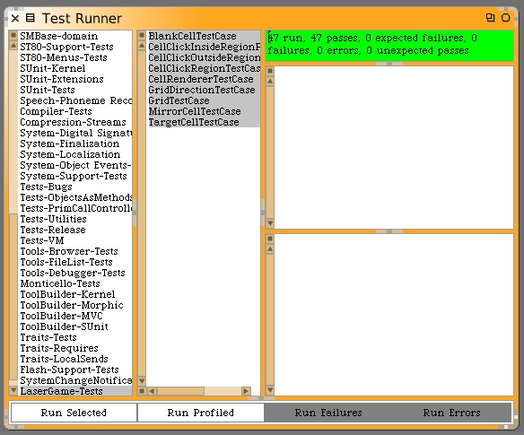

There's an annoying bug in how the application behaves when it gets launched. If you watch closely, right after the Laser Game launches, if performs that "new game" sequence. That's all well and good. But the application first appears with the saved mirrors configuration and then updates to have the game start configuration. We should change that.
We can create a default condition that has no mirrors. Then when the application launches the user can select new game. If we want we can auto start the new game sequence. Eventually, we can make the auto launch be a configurable option.
Begin with a unit test to check this new model behavior and then we'll change how the GUI uses it. Open the GridFactory and add the following class method. For the moment we'll have it be a stub. Here's the new class method.
emptyStandardGrid
Let's switch over to the GridTestCase and write a unit test to check the initial blank grid. Here is the new test case instance method.
testInitialEmptyGrid
| grid |
grid := GridFactory emptyStandardGrid.
self should: [grid numberOfColumns = 8].
self should: [grid numberOfRows = 10].
1 to: grid numberOfColumns do: [:columnNumber |
1 to: grid numberOfRows do: [:rowNumber |
| cell |
cell := grid at: columnNumber@rowNumber.
self should: [cell class = BlankCell]]]
This unit test will first verify the default grid size, having the same expected size as the normal game's number of rows and columns. Next we index through every cell on the grid and confirm that all cells are blank.
Now that we know how we expect it to work, let's go write the GridFactory code. Here's the modified emptyStandardGrid class method on GridFactory.
emptyStandardGrid
^Grid newOfSize: 8@10
Run the unit tests and confirm the new logic for the empty grid works as expected.
